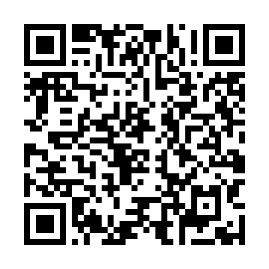

Aile

Kaynak: Aile.mp3
https://ulkemyanimda.eba.gov.tr/etkinlik/2027%20Etkinlik/seviye01/01/1.html
Hedef yayın konumu: ulkemyanimda.eba.gov.tr/etkinlik/2027%20Etkinlik/ — dosyalar bu konuma yüklendikten sonra bağlantılar çalışır.
Kaynak: Aile.mp3
https://ulkemyanimda.eba.gov.tr/etkinlik/2027%20Etkinlik/seviye01/01/1.html

Kaynak: eller havaya.mp3.mpeg
https://ulkemyanimda.eba.gov.tr/etkinlik/2027%20Etkinlik/seviye01/01/2.html

Kaynak: Haydi Dinle.mp3
https://ulkemyanimda.eba.gov.tr/etkinlik/2027%20Etkinlik/seviye01/01/3.html

Kaynak: Kocaman Bir Aile.mp3
https://ulkemyanimda.eba.gov.tr/etkinlik/2027%20Etkinlik/seviye01/01/4.html

Kaynak: oyun vakti.mpeg
https://ulkemyanimda.eba.gov.tr/etkinlik/2027%20Etkinlik/seviye01/01/5.html

Kaynak: öğretmenle hareket.mpeg
https://ulkemyanimda.eba.gov.tr/etkinlik/2027%20Etkinlik/seviye01/01/6.html

Kaynak: Ailem.mp4
https://ulkemyanimda.eba.gov.tr/etkinlik/2027%20Etkinlik/seviye01/01/7.html

Kaynak: Merhaba 2026-05-05 164850.mp4
https://ulkemyanimda.eba.gov.tr/etkinlik/2027%20Etkinlik/seviye01/01/8.html

Kaynak: Merhaba Arkadaşım.mp4
https://ulkemyanimda.eba.gov.tr/etkinlik/2027%20Etkinlik/seviye01/01/9.html

Kaynak: OYUN ARKADAŞIM CAN.mp4
https://ulkemyanimda.eba.gov.tr/etkinlik/2027%20Etkinlik/seviye01/01/10.html

Kaynak: 1. Tema 1. ve 2. Ek Etkinlikler.pdf
https://ulkemyanimda.eba.gov.tr/etkinlik/2027%20Etkinlik/seviye01/01/11.html

Kaynak: 1. Tema hareket kartları.pdf
https://ulkemyanimda.eba.gov.tr/etkinlik/2027%20Etkinlik/seviye01/01/12.html

Kaynak: 1. Tema Selamlaşma kartları.pdf
https://ulkemyanimda.eba.gov.tr/etkinlik/2027%20Etkinlik/seviye01/01/13.html

Kaynak: Sene Başı Pano.pdf
https://ulkemyanimda.eba.gov.tr/etkinlik/2027%20Etkinlik/seviye01/01/14.html